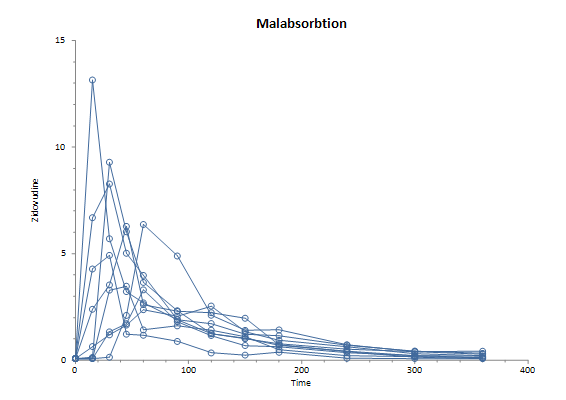
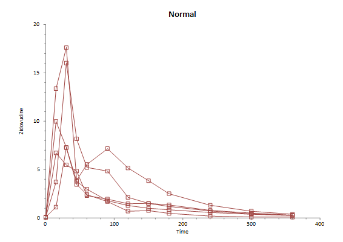
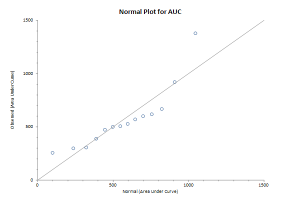
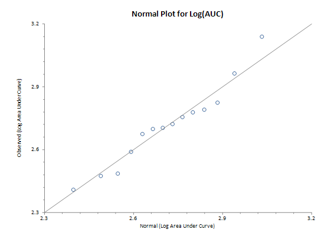
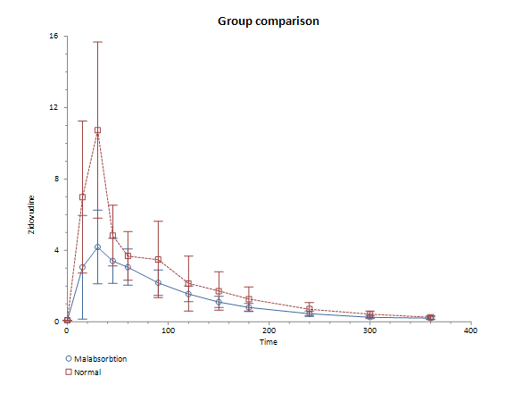

Time Series Summary: Area Under Curve
Menu location: Analysis_Descriptive_Time Series Summary.
This function summarises serially sampled data as the area under the time-observation or time-concentration curve (Bland 2000, Wolfsegger 2007, Jaki & Wolfsegger 2009).
The methods presented here are more commonly applied to peaked data than to growth data (Matthews et al. 1990).
The area under the curve (AUC) is calculated using the linear trapezoidal rule and the variance of a family of AUCs is calculated as the weighted mean variance of observations over the time points used in each subject studied (Wolfsegger 2007 equation 4).

...where t 1-J are times of observations in a series from 1 to J, AUC is the area under the curve for the kth subject from baseline to the last measured time point, w are the weights applied to the observations (X), n is the number of observations at each time point,and sigma squared is the variance of the observations at each time point.
For the t distribution methods the degrees of freedom are calculated as:
A bootstrap-t confidence interval may also be calculated: A random sample of observations at each time point is drawn with replacement; the average area under the curve across all subjects, and its variance, is calculated for each bootstrap sample and the standardised statistic z=(AUC-AUC*)/sqrt(var_AUC*) is collected in a vector; the alpha/2 and 1-alpha/2 centiles from this empirical t distribution are then used to calculate the confidence interval as usual.
When there are two groups the AUCs are compared using an independent two sample t test incorporating the weighted variance estimates calculated as above. A bootstrap t test is also performed using the resampling scheme above, but also stratified by group.
Example
From Bland (2000).
Test workbook (Other worksheet: Group, Time, Zidovudine, Patient).
Blood levels of zidovudine or AZT in patients a different times after oral dosing, comparing those with and without malabsorbtion:
|
Group |
Time | Zidovudine | Patient |
|
Malabsorbtion |
0 | 0.08 | 1 |
| Malabsorbtion | 15 | 13.15 | 1 |
| Malabsorbtion | 30 | 5.70 | 1 |
| Malabsorbtion | 45 | 3.22 | 1 |
| Malabsorbtion | 60 | 2.69 | 1 |
| Malabsorbtion | 90 | 1.91 | 1 |
| Malabsorbtion | 120 | 1.72 | 1 |
| Malabsorbtion | 150 | 1.22 | 1 |
| Malabsorbtion | 180 | 1.15 | 1 |
| Malabsorbtion | 240 | 0.71 | 1 |
| Malabsorbtion | 300 | 0.43 | 1 |
| Malabsorbtion | 360 | 0.32 | 1 |
| Malabsorbtion | 0 | 0.08 | 2 |
| Malabsorbtion | 15 | 0.08 | 2 |
| Malabsorbtion | 30 | 0.14 | 2 |
| Malabsorbtion | 45 | 2.10 | 2 |
| Malabsorbtion | 60 | 6.37 | 2 |
| Malabsorbtion | 90 | 4.89 | 2 |
| Malabsorbtion | 120 | 2.11 | 2 |
| Malabsorbtion | 150 | 1.40 | 2 |
| Malabsorbtion | 180 | 1.42 | 2 |
| Malabsorbtion | 240 | 0.72 | 2 |
| Malabsorbtion | 300 | 0.39 | 2 |
| Malabsorbtion | 360 | 0.28 | 2 |
| ... | ... | ... | ... |
To analyse these data using StatsDirect you must first enter them into a workbook or open the test workbook. Then select Time Series Summary from the Descriptive section of the Analysis menu.
Time Series Summary
Group: Malabsorbtion
| Time | Observations | Mean | SD | SE | Median | IQR |
| 0 | 9 | 0.08 | 0.00 | 0.00 | 0.08 | 0.00 |
| 15 | 9 | 3.06 | 4.44 | 1.48 | 0.64 | 4.20 |
| 30 | 9 | 4.18 | 3.17 | 1.06 | 3.53 | 4.37 |
| 45 | 9 | 3.41 | 1.94 | 0.65 | 3.22 | 3.31 |
| 60 | 9 | 3.06 | 1.55 | 0.52 | 2.69 | 1.28 |
| 90 | 9 | 2.19 | 1.10 | 0.37 | 1.91 | 0.48 |
| 120 | 9 | 1.56 | 0.67 | 0.22 | 1.41 | 0.87 |
| 150 | 9 | 1.11 | 0.48 | 0.16 | 1.09 | 0.33 |
| 180 | 9 | 0.80 | 0.33 | 0.11 | 0.73 | 0.30 |
| 240 | 9 | 0.45 | 0.22 | 0.07 | 0.43 | 0.28 |
| 300 | 9 | 0.26 | 0.13 | 0.04 | 0.22 | 0.22 |
| 360 | 9 | 0.20 | 0.12 | 0.04 | 0.18 | 0.17 |
| Subject ID | Baseline | Min. observation | Max. observation | Time to max. | Slope to max. | AUC |
| 1 | 0.08 | 0.08 | 13.15 | 15 | 0.87 | 667.425 |
| 2 | 0.08 | 0.08 | 6.37 | 60 | 0.10 | 569.625 |
| 3 | 0.08 | 0.08 | 3.47 | 45 | 0.09 | 306.000 |
| 4 | 0.08 | 0.08 | 3.30 | 60 | 0.05 | 298.200 |
| 5 | 0.08 | 0.08 | 8.27 | 30 | 0.27 | 617.850 |
| 6 | 0.08 | 0.08 | 4.92 | 30 | 0.16 | 256.275 |
| 7 | 0.08 | 0.08 | 9.29 | 30 | 0.31 | 527.475 |
| 8 | 0.08 | 0.08 | 2.54 | 120 | 0.02 | 388.875 |
| 9 | 0.08 | 0.08 | 6.28 | 45 | 0.13 | 505.875 |
Subjects: 9
Observations (mean per time point): 108 (9)
Mean (SD) area under curve (AUC): 459.73 (34.85)
95% t-interval for AUC: 388.86 to 530.60
95% bootstrap-t interval for AUC (1000000 iterations, seed 2944296): 396.60 to 542.57
95% z-interval for AUC: 391.42 to 528.05
Median (IQR) area under curve: 505.88 (263.63)
Median (IQR) time to maximum 45 (30)
Median (IQR) slope to maximum 0.13 (0.18)
Mean (SD) slope to maximum 0.21 (0.26)

Group: Normal
| Time | Observations | Mean | SD | SE | Median | IQR |
| 0 | 5 | 0.08 | 0.00 | 0.00 | 0.08 | 0 |
| 15 | 5 | 6.98 | 4.78 | 2.18 | 6.72 | 6.26 |
| 30 | 5 | 10.73 | 5.63 | 2.52 | 7.28 | 8.75 |
| 45 | 5 | 4.83 | 1.94 | 0.87 | 3.90 | 1.07 |
| 60 | 5 | 3.69 | 1.56 | 0.70 | 2.97 | 2.79 |
| 90 | 5 | 3.49 | 2.44 | 1.09 | 1.95 | 3.06 |
| 120 | 5 | 2.14 | 1.76 | 0.79 | 1.46 | 0.85 |
| 150 | 5 | 1.72 | 1.23 | 0.55 | 1.49 | 0.51 |
| 180 | 5 | 1.27 | 0.77 | 0.35 | 1.18 | 0.51 |
| 240 | 5 | 0.71 | 0.41 | 0.18 | 0.72 | 0.2 |
| 300 | 5 | 0.41 | 0.22 | 0.10 | 0.41 | 0.12 |
| 360 | 5 | 0.25 | 0.11 | 0.05 | 0.28 | 0.04 |
| Subject ID | Baseline | Min. observation | Max. observation | Time to max. | Slope to max. | AUC |
| 10 | 0.08 | 0.08 | 16.02 | 30 | 0.53 | 919.875 |
| 11 | 0.08 | 0.08 | 6.72 | 15 | 0.44 | 599.850 |
| 12 | 0.08 | 0.08 | 9.98 | 15 | 0.66 | 499.500 |
| 13 | 0.08 | 0.08 | 7.27 | 30 | 0.24 | 472.875 |
| 14 | 0.08 | 0.08 | 17.61 | 30 | 0.58 |
1377.975 |
Subjects: 5
Observations (mean per time point): 60 ( 5 )
Mean (SD) area under curve (AUC): 774.02 (72.22)
95% t-interval for AUC: 628.53 to 919.50
95% bootstrap-t interval for AUC (1000000 iterations, seed 2944296): 633.67 to 938.73
95% z-interval for AUC: 632.48 to 915.55
Median (IQR) area under curve: 599.85 (420.38)
Median (IQR) time to maximum 30 (15)
Median (IQR) slope to maximum 0.53 ( 0.14 )
Mean (SD) slope to maximum 0.49 ( 0.16 )

AUC Distribution

R-square for AUC vs. normal scores: 0.90

R-square for log(AUC) vs. normal scores: 0.98
Group comparison: Malabsorbtion vs. Normal
t (SE): -3.92 (80.19)
DF: 32.71
P (two tailed): 0.0004
AUC difference (95% CI): -314.28 (-477.48 to -151.09)
Bootstrapped with 1000000 iterations, seed 2944296
Two sided bootstrap P = 0.0007
95% bootstrap-t interval: -485.34 to -156.86
